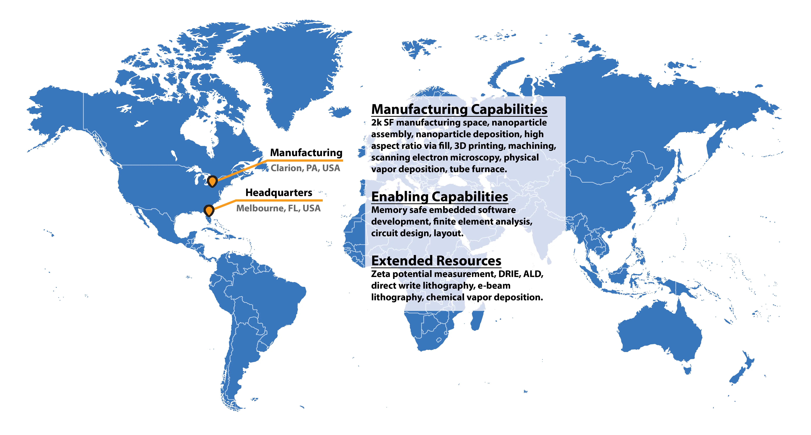

nTessimal was founded to bridge the gap between cutting edge nanoparticle R&D and high volume device manufacturing. Nanoparticles with novel semiconducting, plasmonic, photonic, sensing, thermal, RF, and microelectromechanical properties surpassing bulk materials and materials made with top down microfabrication. Various laboratory scale systems have been used to pattern and/or deposit nanomaterials, however there has been a lack of effective general purpose commercial systems to bridge the gap between nanoparticle R&D and nanoparticle device commercialization. With patent pending, scalable, commercial, multiphysics assembly chambers we aim to connect researchers and high volume fabs.
The nTessimal team aims to bridge this gap with patent pending multiphysics nanoparticle patterning and deposition chambers developed with decades of experience in microfabrication, nanotechnology, embedded software, systems engineering, and manufacturing. Our initial prototyping chambers target universities, R&D licensing efforts, and R&D exploration efforts to demonstrate patterning or deposition of nano and microparticles into novel logic, memory, RF, biotech, photonic, plasmonic, etc. devices. These chambers are based on the same physics being incorporated into high volume chambers under development with our high volume commercial customers and are identical to our in house prototype scale systems.
Copyright © 2024 nTessimal, LLC